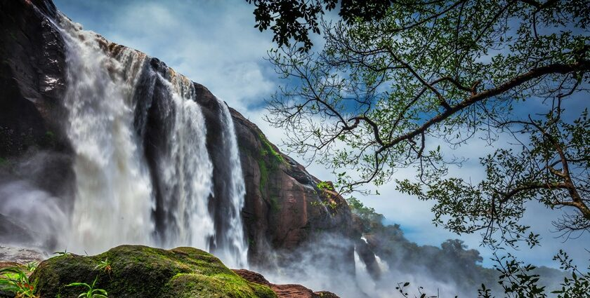
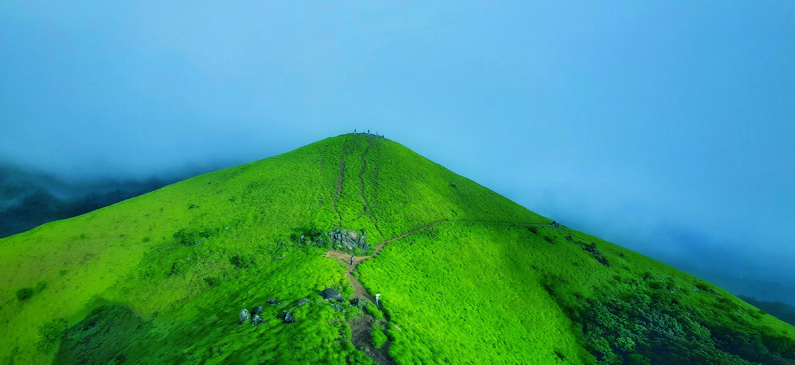
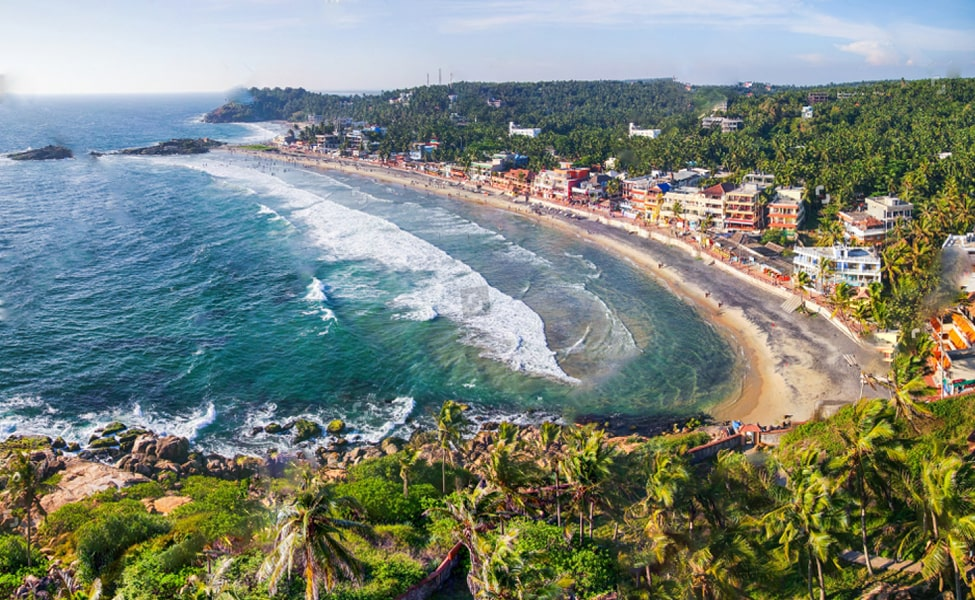
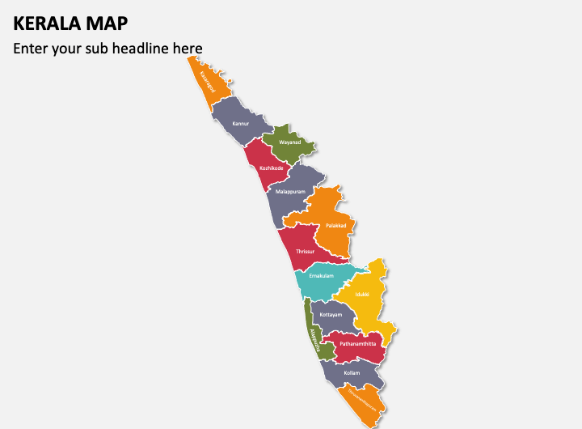

Alapuzha is a city located in the Indian state of Kerala, on the Laccadive Sea coast. It's also known as Alleppey, and is known for its backwaters, a network of rivers, lakes, and canals.
Alapuzha is a popular tourist destination, famous for its houseboat cruises and Kerala backwater tourism. The city is also famous for its ancient temples, churches, and mosques, and is often called the "Venice of the East" due to its unique geographical features.

Kannur
Kannur is a city located in the state of Kerala, India. It is the administrative headquarters of Kannur district and is often referred to as the "Land of Five Forts" due to its rich history and architecture. Kannur is known for its beautiful beaches, temples, and festivals, and is a popular tourist destination. The city is also an important commercial center, with a thriving textile and agricultural industry. Kannur is accessible by air, rail, or road, and has a wide range of accommodations and dining options available to tourists.

kasaragod
Kasargod is a district in the state of Kerala, India, situated on the west coast of the country. It is a coastal district with a rich cultural heritage and a blend of traditional and modern architecture. The district is known for its scenic beauty, with the Western Ghats on one side and the Arabian Sea on the other. Kasargod is also famous for its unspoiled beaches, forts, and temples, making it a popular tourist destination. The best time to visit Kasargod is during the winter months of November to February, when the weather is mild and pleasant.

Trivandrum
Trivandrum is the capital city of the Indian state of Kerala, located on the west coast of India. Prior to 1957, the city was known as Trivandrum, but was later renamed Thiruvananthapuram. It is a major cultural and educational center in the state, home to many institutions of higher learning, including the University of Kerala and the Indian Institute of Management Kozhikode. The city is also known for its picturesque beaches, lush green forests, and historic architecture, making it a popular tourist destination.

Kerala Map
Kerala, a southern state in India, is known for its serene backwaters, lush green hills, and stunning beaches. Dubbed God's Own Country, Kerala is famous for its tranquil atmosphere, rich cultural heritage, and delicious cuisine. The state is home to the Western Ghats, a UNESCO World Heritage Site, and is also renowned for its Ayurvedic medicine and spice plantations. Tourists flock to Kerala to experience its houseboat cruises, elephant sanctuaries, and vibrant festivals, making it a popular destination for relaxation and adventure seekers alike.